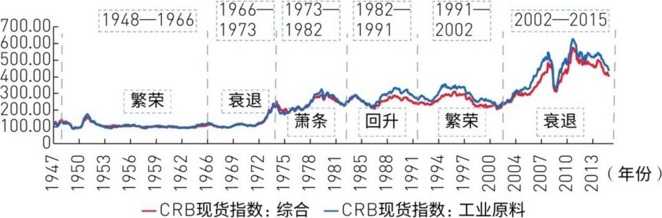

11 世界大宗商品周期研究
2016年初的核心问题：大宗商品从2011年跌到2016年（5年），油跌了70%，铜跌了52%——是不是到了买入的战略底部？周金涛的回答分四个层级：
① 康波层面：2015年熊市还在继续，但2018-2019是衰退→萧条的转换点=重要低点。
② 产能周期层面（25-30年）：2015年处于下降中段，低点在2018-2019年。
③ 超级周期层面（18-20年）：2001年启动→2010年见顶→最终低点2019年。2016年会出现年度级别的超跌反弹（双底的第一脚）。
④ 涛动周期层面：2016-2019年还有一次涛动周期，价格先反弹再探底。
结论：2016年有中级反弹→2019年之前再次探底→2019年后横盘→2030年附近新产能周期开启。
康波决定商品的大周期：每次康波从繁荣转向衰退→10年商品大牛市→随后20年熊市贯穿衰退和萧条。本轮康波：2002-2011=10年牛市（CRB涨172%），2011年之后进入熊市。衰退和萧条的交接点（2018-2019）=商品价格的长期低点。
"人生发财靠康波"的注脚：五类资产中，大宗商品最暴利——上行周期收益率碾压一切，下行周期亏得最惨。研究底部=找到暴利的起点。如果你能在2019年前后确认大宗商品底部，那不是炒期货的问题，是可以在实体中买矿山的战略机会。



历史比较是关键：本轮金属跌了5年（历史平均6年），跌幅55%（历史平均44%）。本轮原油跌了5年（历史平均5年），跌幅63%（历史平均55%）。时间和幅度都已达到或超过历史平均水平——底部的讨论时间到了。


产能周期是大宗商品最底层的节奏器。用"固定资产平均使用时间"来测量：设备越旧→投资越少→产能萎缩→价格见底，然后反转。历史规律：产能周期每25-30年一轮，启动序列1945→1972→2002→2030。
当前定位（2016年）：产能周期2011年见顶→进入下降期→价格主跌段已过→低点大概在2018-2019年出现。之后横盘到2030年左右，下一轮产能周期启动。
为什么产能周期这么长？牛鞭效应：上游资源品处于供应链最末端→需求波动被逐层放大→反应最慢、波动最剧烈、周期最长。


超级周期=把产能周期的长期趋势剥掉后，商品自身的18-20年波动。它跟随房地产周期：1960年前跟西半球（美国），1960年后跟东半球（中国/亚洲）。本次超级周期：2001年启动→2010年见顶→预测2019年触底，历时18年。


超级周期内部，金属价格分成三段波动（涛动周期）。本轮只经历了前两段（2001-2008、2009-2015）→2016-2019年必然还有第三段反弹。第三段的高度大概率不如前两段，但够做一波中级行情。
在不同库存周期中：第一库存周期=商品价格修复（弹性最大），第三库存周期=滞胀行情（大宗最猛）。2016年就是第一库存周期的反弹窗口。


四层嵌套，一层套一层：
🥇 康波（50-60年）：决定大方向。繁荣→衰退转换=10年商品牛市；衰退+萧条=20年熊市。
🥈 产能周期（25-30年）：一个康波里有两个。启动序列：1945→1972→2002→2030。本轮2002年启动，2030年结束。
🥉 超级周期（18-20年）：一个产能周期里有一到两个。本轮2001-2019年。跟随房地产周期。
🏅 涛动周期（约6-7年）：一个超级周期里有三个。本轮已走完两个，还剩最后一个（2016-2019）。
结论：2016年中级反弹→2018-2019年终极大底→2019年后横盘震荡→2030年新产能周期开启→下一轮商品大牛市。现在（2016年初）是布局商品战略投资的关键窗口。